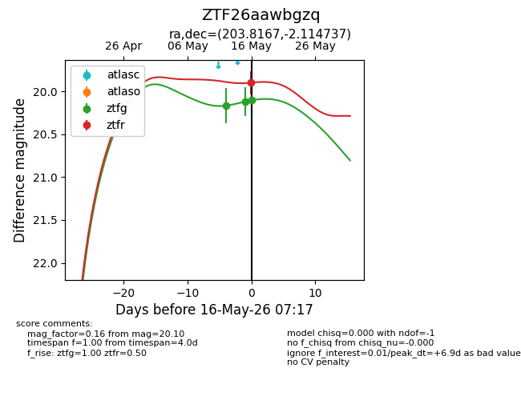
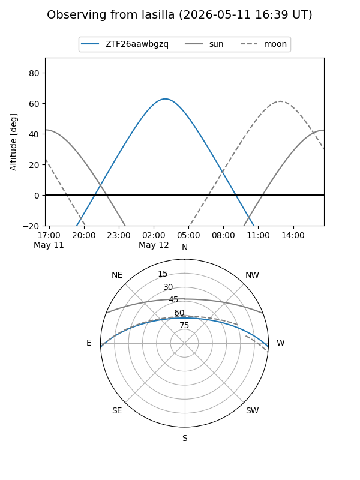
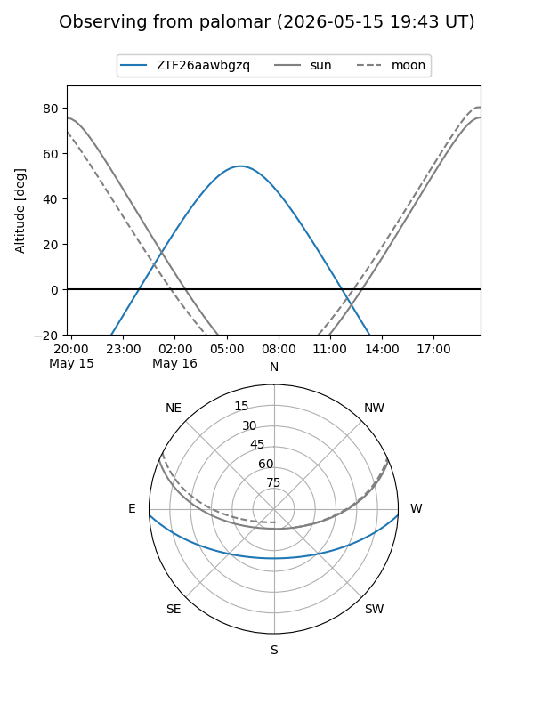
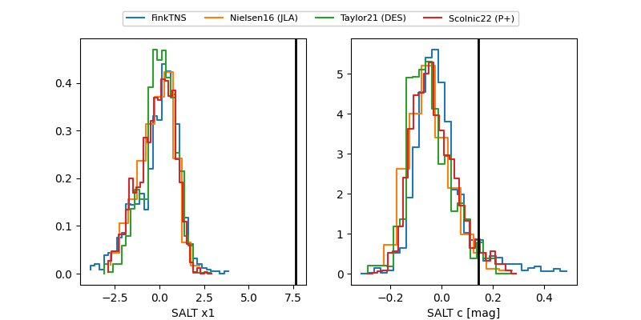

ZTF26aawbgzq
Target ZTF26aawbgzq at 2026-05-16 07:19
Aliases and brokers:
FINK: link
Lasair: link
ALeRCE: link
alt names
ZTF26aawbgzq (ztf,fink_ztf)
Coordinates:
equatorial (ra, dec) = 203.8167,-2.11474
equatorial (HMS+DMS) = 13:35:16.00,-02:06:53.05
galactic (l, b) = (324.5132,+58.90830)
Flags:
Photometry:
last ztfg=20.10, ztfr=19.90
3 ztfg, 1 ztfr detections
Lightcurve

Visibility


Additional plots
